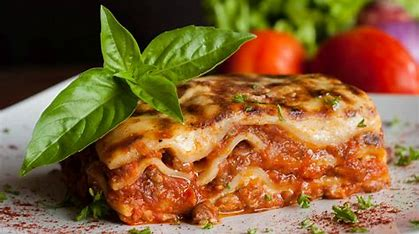

Lasagnes

Les lasagnes sont un plat italien composé de couches de pâtes, de sauce tomate, de viande hachée (ou d'autres garnitures comme des légumes),
de fromage et parfois de béchamel. Les couches sont assemblées puis cuites au four jusqu'à ce que le fromage soit fondu et doré. Ce plat gratiné
est apprécié pour ses saveurs riches et sa texture superposée.
Les Ingrédients
- Viande hachée
- Oignon
- Sauce Tomate
- Un peu de sucre
- Des épices
- Fromage
- Bechamel
Les étapes à suivre :
- Faire cuire les feuilles de lasagnes dans de l'eau bouillante salée selon les instructions sur l'emballage.
- Préparer la sauce à la viande :
- Faire revenir la viande hachée dans une poêle avec de l'huile d'olive jusqu'à ce qu'elle soit dorée.
- Ajouter les oignons et l'ail hachés, faire revenir jusqu'à ce qu'ils soient tendres.
- Verser la sauce tomate, assaisonner avec du sel, du poivre, et des herbes italiennes. Laisser mijoter pendant 15-20 minutes.
- Préparer la sauce béchamel :
- Faire fondre le beurre dans une casserole à feu moyen.
- Ajouter la farine et mélanger jusqu'à ce que le mélange devienne doré.
- Progressivement, ajouter le lait en remuant constamment jusqu'à ce que la sauce épaississe.
- Assaisonner avec du sel, du poivre et de la noix de muscade selon votre goût.
- Assembler les lasagnes :
- Préchauffer le four à 180°C (350°F).
- Beurrer un plat à gratin et étaler une fine couche de sauce béchamel au fond.
- Disposer une couche de feuilles de lasagnes, puis étaler une couche de sauce à la viande et une couche de sauce béchamel.
- Répéter les couches jusqu'à ce que tous les ingrédients soient utilisés, en terminant par une couche de sauce béchamel.
- Cuire au four :
- Couvrir le plat de papier d'aluminium et cuire au four préchauffé pendant 30 minutes.
- Retirer le papier d'aluminium et poursuivre la cuisson pendant 15 minutes supplémentaires, jusqu'à ce que le dessus soit doré.
- Laisser reposer quelques minutes avant de servir.
- Servir chaud et déguster !
Retour >>